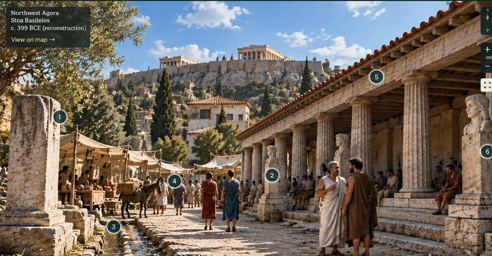

Viewpoint

Panathenaic approach · arrival and movementc. 399 BCE reconstruction · exact standing point unknown
AttestedReconstructedPossibleInterpretative
Reconstruction note
This is an AI derived reconstruction which is interpretative and evidence-aware. It is intended to re-situate the encounter visually, not to claim an exact recovery.